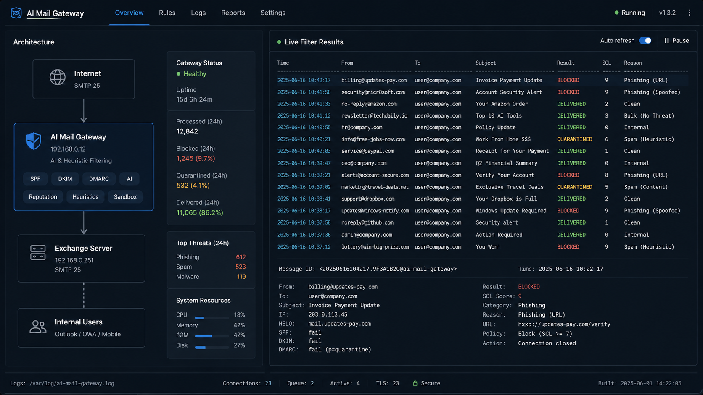

Layered defense
Blacklist and whitelist, SPF/DKIM/DMARC, attachment and URL reputation, then AI SCL — no single signal decides alone.
Exchange · AI Security
AiMailProxy for Microsoft Exchange
An inbound SMTP proxy that inspects mail before Exchange — layered auth, link and attachment scans, and LLM-based SCL 0–9 for transport rules.

Known-bad senders can be rejected at SMTP with 550. Everything else is analyzed, tagged with SCL and risk headers, then relayed so Exchange transport rules can junk or quarantine without rewriting the mailbox path.
Blacklist and whitelist, SPF/DKIM/DMARC, attachment and URL reputation, then AI SCL — no single signal decides alone.
AI assigns Microsoft-compatible SCL 0–9 plus optional Subject prefixes and custom headers for existing transport rules.
A body classification cache confirms repeat campaigns after a few analyses, then skips further LLM calls for matching mail.
Inspection pipeline
After SMTP DATA, the proxy parses the message, runs auth and scans, classifies with AI or cache, applies SCL floors, then relays — with per-check outcomes visible in the console and daily logs.
AI SCL
Cerebras or Groq classifies subject, senders, recipients, attachment names, and a body preview into SCL 0–9 via a hot-reloaded prompt. Auth failures, brand impersonation, and high-risk attachments raise floors so weak signals still raise the score before relay.
Threat signals
URLs are checked with APIVoid then VirusTotal. Attachments use banned extensions, zip recursion, magic-byte filetype detection, and oletools macro analysis. SMTP peer IPs can be scored on VirusTotal, including recovery of originating IP when mail arrives via a trusted TMES gateway.
Inbound MX or connector delivers SMTP to AiMailProxy before Exchange. Exact recipient blacklist can reject at RCPT.
Whitelist/blacklist, auth, attachments, links, cache or AI SCL, then floors and optional composite reject.
Add X-AiMailProxy-* headers and Subject prefixes, then SMTP-relay to Exchange for Junk, phishing, or quarantine rules.
Python SMTP edge service with monitor mode for safe rollout, daily stats and optional report mail, spammer accumulation, and Windows-friendly operation.
I design and build AiMailProxy end to end — the SMTP receive/relay path, multi-layer inspection pipeline, AI SCL protocol and caching, Exchange header integration, and operational tooling for logs, stats, and hot-reloaded policy files.
Built with Python, aiosmtpd, aiohttp, pyspf, dkimpy, VirusTotal / APIVoid integrations, and LLM APIs (Cerebras / Groq).